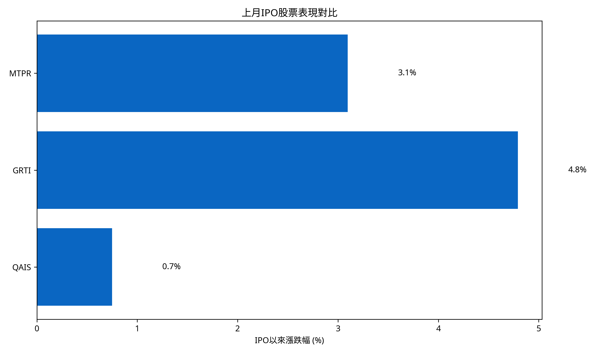
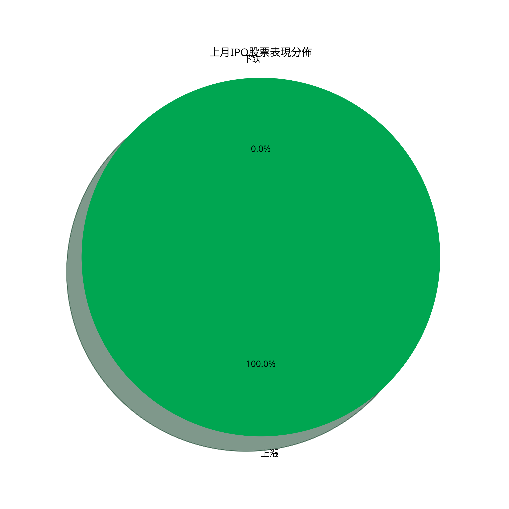
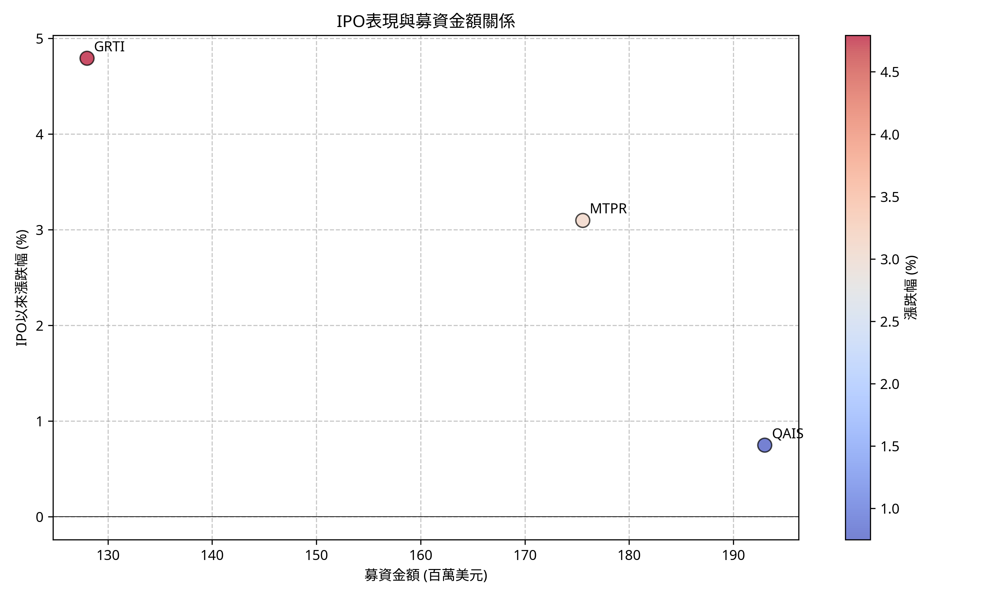
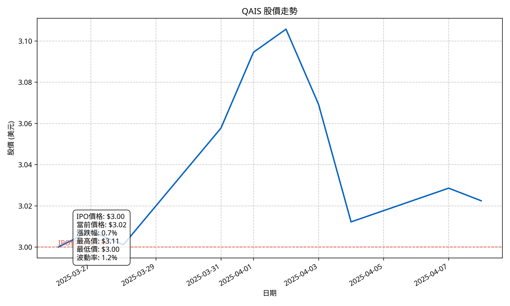
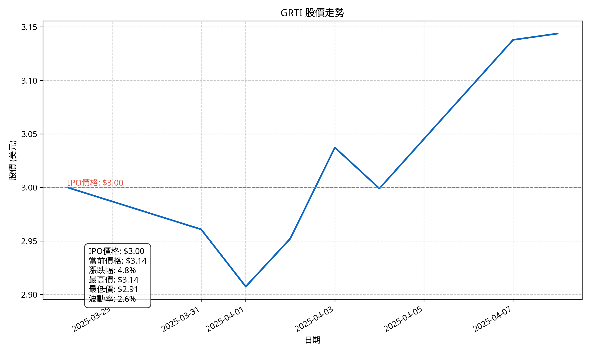
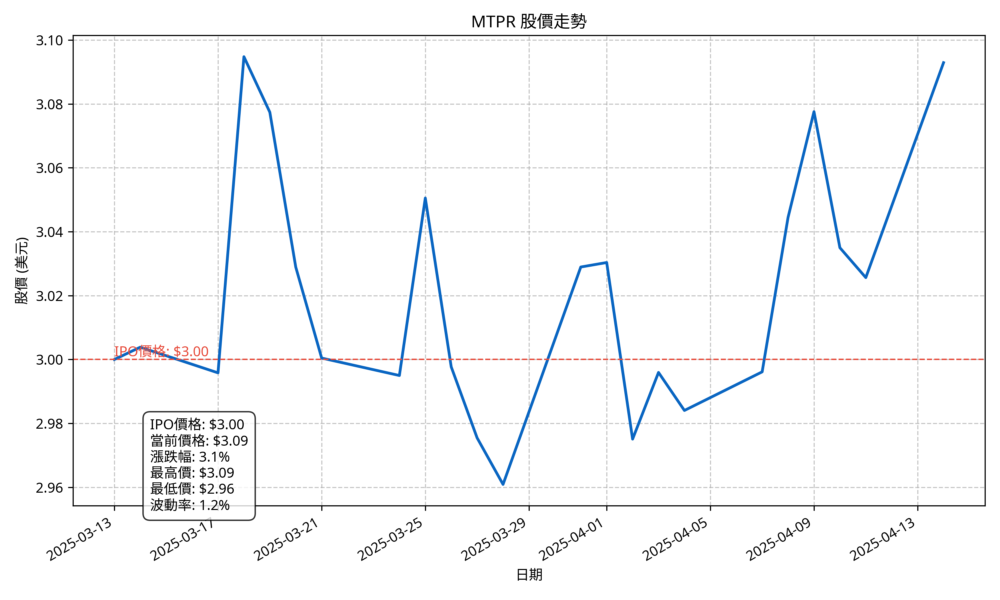

2025年3月IPO表現分析
生成日期: 2025年04月09日 10:19:48
整體表現分析
March月共有 3 隻IPO股票上市。整體平均漲跌幅為 2.9%，其中 3 隻上漲，0 隻下跌。
表現最好的股票是 GRTI，漲幅達 4.8%；表現最差的股票是 QAIS，跌幅為 0.7%。
IPO表現對比
IPO表現分佈
IPO表現與募資金額關係
個股表現分析
QAIS 股價走勢
IPO價格: $3.00
當前價格: $3.02
價格變動: $0.02
漲跌幅: 0.7%
最高價: $3.11
最低價: $3.00
波動率: 1.2%

GRTI 股價走勢
IPO價格: $3.00
當前價格: $3.14
價格變動: $0.14
漲跌幅: 4.8%
最高價: $3.14
最低價: $2.91
波動率: 2.6%

MTPR 股價走勢
IPO價格: $3.00
當前價格: $3.09
價格變動: $0.09
漲跌幅: 3.1%
最高價: $3.09
最低價: $2.96
波動率: 1.2%
